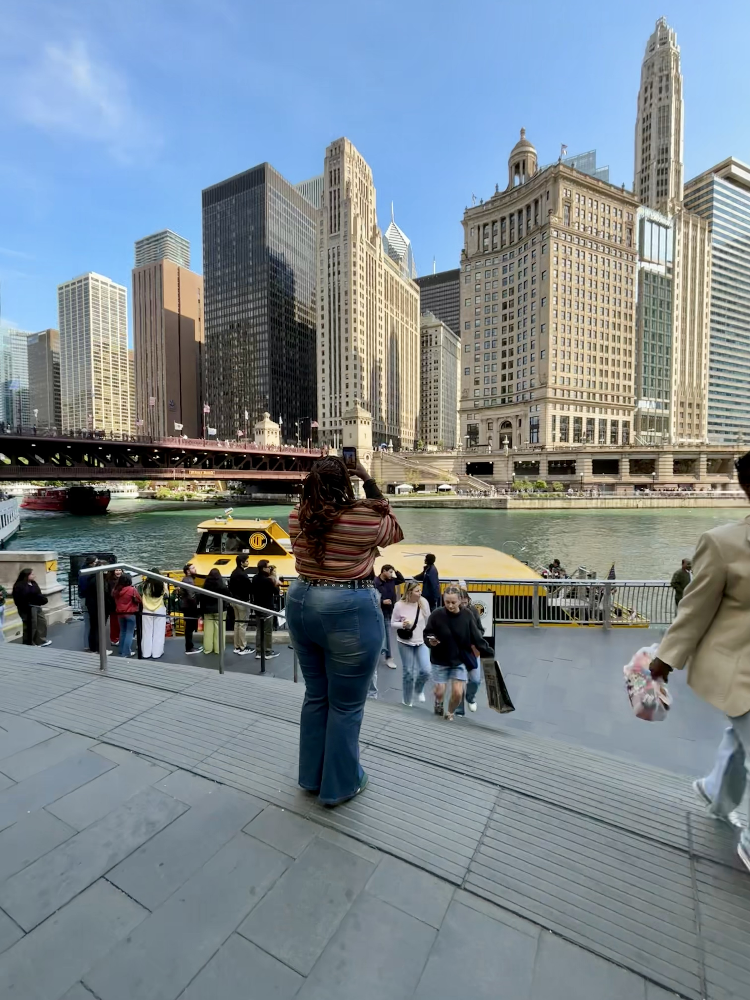

There's an art to the weekend getaway—curating experiences that feel
both effortless and exceptional. Chicago, with its bold architecture
and refined culinary scene, provides the perfect canvas for those who
appreciate beauty in the details and luxury in the understated.
This guide is for the discerning traveler who values quality over
labels, experiences over extravagance, and the quiet confidence that
comes from impeccable taste.

The magnificent Chicago skyline at golden hour
My approach to travel mirrors my approach to style: intentional,
curated, and focused on quality. Chicago's architectural grandeur and
cultural depth offer the perfect backdrop for a weekend of sophisticated
exploration without ostentation.
From the serene Art Institute to the innovative dining establishments,
every moment felt like an exercise in curated living—where the focus
remains on the experience itself rather than its display.
"Quiet luxury isn't about what you wear, but how you move through the
world—with intention, discernment, and an appreciation for the
exceptional in the everyday."
Luxury Accommodation: Hyatt Regency Chicago
Hyatt Regency Chicago
Location: Heart of downtown, steps from the
Riverwalk
Perfect For: Professionals seeking convenience and
luxury
Highlight: Stunning city views and exceptional
service
Nestled in the heart of downtown, the Hyatt Regency offered the
perfect base for our urban adventure. Waking up to panoramic views
of the Chicago River and city skyline set the tone for each day.
Culinary Excellence
The importance of reservations cannot be overstated for a successful
weekend getaway. We secured our Saturday night dinner at Nisos Prime
two weeks in advance, and it was worth every moment of anticipation.
Weekend Getaway Essentials
Packing for a sophisticated weekend requires a curated
approach—selecting pieces that work harmoniously while maintaining
the highest standards of quality and comfort.
The Row
For the ultimate in minimalist luxury, their slouchy trousers
and perfectly weighted t-shirts are worth the investment. The
cut and fabric quality is immediately apparent to those who
understand craftsmanship.
Khaite
Modern American luxury with exceptional cashmere and leather
pieces. Their jeans are particularly noteworthy—the perfect fit
without any obvious branding.
Bottega Veneta
The intrecciato weave speaks volumes without a logo in sight.
Their leather goods and shoes represent the pinnacle of
understated Italian craftsmanship.
Totême
Scandinavian minimalism at its finest. Their signature coats and
separates create a cohesive, sophisticated travel wardrobe with
impeccable silhouettes.
Skincare & Beauty
Travel skincare should be effective, multi-functional, and packaged
with the same attention to aesthetics as the rest of your beauty
routine.
Quiet Luxury Beauty Brands
-
Augustinus Bader - The Rich Cream is a cult
favorite for a reason, providing all-in-one skincare in
travel-friendly sizes
-
La Mer - Their travel-sized The Moisturizing Soft
Cream delivers intense hydration without heaviness
-
Susanne Kaufmann - Austrian organic skincare with
elegant, effective formulations in beautiful packaging
-
Victoria Beckham Beauty - The perfect tinted
moisturizer and subtle eye tints for a polished but natural look
Beauty Philosophy
The goal is healthy, glowing skin that looks naturally
beautiful—not heavily made up. A perfect tinted sunscreen,
well-groomed brows, and a hydrating lip balm are the foundation of
this approach.
Footwear
The right shoes should combine comfort with impeccable
style—beautifully crafted pieces that support a day of exploration
while maintaining elegance.
Walking Shoes
Manu Atelier - Their leather sneakers are
fashion-forward yet incredibly comfortable, with no obvious
branding
Ancient Greek Sandals - Handmade in Greece,
these sandals mold to your feet while maintaining an artistic,
minimalist aesthetic
Evening & Style
Hereu - Spanish craftsmanship meets timeless
design in their leather boots and shoes
St. Agni - Australian minimalist footwear that
pairs beautifully with both daytime and evening looks
The common thread among these brands is exceptional leather quality,
thoughtful design, and complete absence of loud branding—letting the
craftsmanship speak for itself.
Exploring the Windy City
What makes Chicago ideal for busy professionals? The city's compact
downtown core means you can experience world-class architecture, art,
and dining without wasting precious time in transit.
The key to a successful weekend getaway is strategic planning paired
with luxurious spontaneity. While we had our essential reservations
locked in, we left room for unexpected discoveries—a hidden speakeasy,
an impromptu architecture tour, or simply enjoying a perfect espresso
at a local café.
"The luxury of the future will not be loud logos, but quiet
confidence—in our choices, our style, and how we move through the
world."